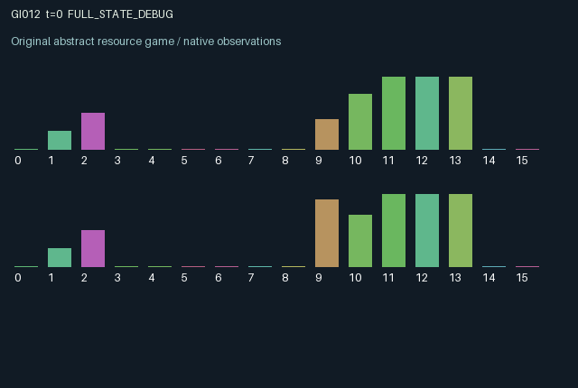

GI012 / LEGACY_ARRAY
astra-d2-00012 — Escrow-backed exchange with a delivery pipeline
2 agents5 actions16 observation columns32 original horizonRuntime: PASS
Release verification episode
Untrained uniform legal actions. Actual JAX state sampled along the full original episode; full-state debug camera. No human performance or learning claim.

Run this game
crucibles play --game 12
Start Python locally, then open the address printed by the terminal. Installation, multiplayer, takeover and keyboard controls →
Objective, rewards & ending
Exact task contract
{
"objective": "Accumulate original per-agent rewards under the interaction rules in mechanism.md.",
"natural_termination": "No early terminal; original t >= 32 horizon.",
"exact_transition_and_reward_source": "def raw_step(self, key, state, actions):\n made = ((actions == 1) & (state[\"stock\"] < 4)).astype(jnp.int32)\n posted = (\n (actions == 2) & (state[\"money\"] > 0) & (state[\"escrow\"] == 0)\n ).astype(jnp.int32)\n cancelled = ((actions == 4) & (state[\"escrow\"] > 0)).astype(jnp.int32)\n offered = state[\"escrow\"] + posted - cancelled\n shipped = (\n (actions == 3) & (state[\"stock\"] > 0) & (jnp.roll(offered, 1) > 0)\n ).astype(jnp.int32)\n received = jnp.roll(state[\"near\"], 1)\n rewards = (\n received.astype(jnp.float32) * (0.6 + 0.2 * state[\"taste\"])\n - made.astype(jnp.float32) * state[\"make_cost\"]\n - 0.015 * posted.astype(jnp.float32)\n - 0.01 * cancelled.astype(jnp.float32)\n ).astype(jnp.float32)\n next_state = {\n \"t\": state[\"t\"] + jnp.array(1, dtype=jnp.int32),\n \"stock\": state[\"stock\"] + made - shipped,\n \"money\": state[\"money\"] - posted + cancelled + state[\"near\"],\n \"escrow\": offered - jnp.roll(shipped, 1),\n \"far\": shipped,\n \"near\": state[\"far\"],\n \"taste\": state[\"taste\"],\n \"make_cost\": state[\"make_cost\"],\n \"received\": received,\n }\n done_all = next_state[\"t\"] >= 32\n dones = jnp.full((2,), done_all, dtype=jnp.bool_)\n info = {\n \"done_all\": done_all,\n \"legal_mask\": self.legal_actions(next_state),\n }\n return self.observe(next_state), next_state, rewards, dones, info"
}Declared per-step reward bounds: -1.0 to 1.0. Observability: source_defined.
Rules
Original mechanism document (historical status wording retained)
# astra-d2-00012 — Escrow-backed exchange with a delivery pipeline Status: authored source only. Isolated validation and duplicate/mechanism review are pending. ## Causal transition Each agent manufactures a consumable good, owns money, and can post one unit of money as a public purchase escrow. Actions are 0 wait, 1 manufacture, 2 post escrow, 3 dispatch a good against the other agent's available escrow, and 4 cancel one's own unmatched escrow. Unavailable actions have no effect and remain legal. Posting and cancellation are resolved before dispatch. A dispatch consumes the sender's stock and the buyer's free escrow. The captured payment travels with that dispatch: it cannot subsequently be cancelled. Two subsequent transitions later the recipient consumes the good and the sender receives the locked payment. The two-slot queue makes outstanding deliveries different from immediately spendable money. A payment arriving during a transition becomes spendable in the next decision. The total of liquid money, free escrow, and money represented by all queued shipments is conserved at four units. Stock is capped at four. A sender can earn the means to buy by supplying the partner, while a buyer can create or withdraw an opportunity to supply. Both agents directly affect the other's opportunity set and delayed consumption. ## Information An agent observes its stock and liquid money, both free escrows, both directions of the delivery pipeline, its private consumption taste and production cost, the clock, pre-action manufacture/post/dispatch feasibility, and its latest receipt. It does not observe the partner's liquid balance, inventory, taste, or production cost. Observation columns 0–15 are time/32, own stock/4, own money/4, own escrow, peer escrow, own far shipment, own near shipment, peer far shipment, peer near shipment, taste, make cost/0.12, remaining time/32, manufacture feasibility, posting feasibility, dispatch feasibility, and last received quantity. ## Incentives and reward bound A consumed good pays 0.6 + 0.2 times the recipient's fixed taste. Successful manufacture costs a private amount in [0.08, 0.12); posting costs 0.015 and cancellation costs 0.01. These three costly actions are mutually exclusive. At most one good arrives per role per step, so rewards lie within [-0.12, 0.8]. Money itself has no terminal utility. Pending deliveries and unused resources remain in the terminal state; the episode does not pay a post-horizon salvage value. This mechanism is related to generic bilateral trade, escrow commitment, and delayed settlement. Its proposed causal structure is resource conservation with cancellable unmatched offers and irrevocable matched payments. This description does not establish novelty or separation from an external candidate pool. ## Interface and provenance Two agents, sixteen float32 observations each, five always-legal actions, and a 32-transition episode. The reset key draws private tastes and costs; subsequent exchange is deterministic conditional on actions. This is a parentless training-context proposal, with no supplied parent, feedback capsule, or outcome information.
Commands
0Wait
1Make goods
2Post escrow
3Ship against partner escrow
4Cancel escrow
Roles & abilities
agent_0 Original legacy agent; see mechanism and source
agent_1 Original legacy agent; see mechanism and source
Observation permissions
Training receives only the original observation rows. Role cameras use declared visibility; debug cameras are explicitly marked. Local benchmark records log debug exposure and role takeover history.
Exact observation layout
[
{
"slice": [
0,
16
],
"visibility": "exact original observe() below",
"source_code": "def observe(self, state):\n obs = jnp.zeros((2, 16), dtype=jnp.float32)\n obs = obs.at[:, 0].set(state[\"t\"].astype(jnp.float32) / 32.0)\n obs = obs.at[:, 1].set(state[\"stock\"].astype(jnp.float32) / 4.0)\n obs = obs.at[:, 2].set(state[\"money\"].astype(jnp.float32) / 4.0)\n obs = obs.at[:, 3].set(state[\"escrow\"].astype(jnp.float32))\n obs = obs.at[:, 4].set(jnp.roll(state[\"escrow\"], 1).astype(jnp.float32))\n obs = obs.at[:, 5].set(state[\"far\"].astype(jnp.float32))\n obs = obs.at[:, 6].set(state[\"near\"].astype(jnp.float32))\n obs = obs.at[:, 7].set(jnp.roll(state[\"far\"], 1).astype(jnp.float32))\n obs = obs.at[:, 8].set(jnp.roll(state[\"near\"], 1).astype(jnp.float32))\n obs = obs.at[:, 9].set(state[\"taste\"])\n obs = obs.at[:, 10].set(state[\"make_cost\"] / 0.12)\n obs = obs.at[:, 11].set(1.0 - state[\"t\"].astype(jnp.float32) / 32.0)\n obs = obs.at[:, 12].set((state[\"stock\"] < 4).astype(jnp.float32))\n obs = obs.at[:, 13].set(\n ((state[\"money\"] > 0) & (state[\"escrow\"] == 0)).astype(jnp.float32)\n )\n obs = obs.at[:, 14].set(\n ((state[\"stock\"] > 0) & (jnp.roll(state[\"escrow\"], 1) > 0)).astype(\n jnp.float32\n )\n )\n obs = obs.at[:, 15].set(state[\"received\"].astype(jnp.float32))\n return obs"
}
]Entity visibility & attributes
[]
Actual verification & provenance
Per-game execution receipt
{
"game": "gi012",
"status": "PASS",
"verification_revision": 2,
"source_sha256": "053170514451d6f9d581f0e6c3b72e54ca9f20b96298fcb7a946f3a2d10dae2d",
"seed": 20261101,
"runtime": {
"jax": "0.4.38",
"numpy": "1.26.4",
"devices": [
"TFRT_CPU_0"
]
},
"dimensions": {
"num_agents": 2,
"observation_size": 16,
"num_actions": 5,
"max_steps": 32
},
"checks": {
"eager_reset": {
"status": "PASS",
"seconds": 0.5965619087219238
},
"observation_spaces_legal_masks": {
"status": "PASS",
"seconds": 0.19492506980895996
},
"eager_step": {
"status": "PASS",
"seconds": 0.26963162422180176
},
"jit_reset": {
"status": "PASS",
"seconds": 0.22753119468688965
},
"jit_step": {
"status": "PASS",
"seconds": 0.17534399032592773
},
"eager_jit_integer_parity_float_measurement": {
"status": "PASS",
"seconds": 0.0010004043579101562
},
"jit_vmap_reset": {
"status": "PASS",
"seconds": 0.26694178581237793
},
"jit_vmap_step": {
"status": "PASS",
"seconds": 0.27603864669799805
},
"outer_autoreset_api": {
"status": "PASS",
"seconds": 0.5758752822875977
},
"full_original_horizon_episode_and_render": {
"status": "PASS",
"seconds": 1.2286875247955322
}
},
"human_scores": null,
"browser_controls": "PENDING",
"failures": [],
"elapsed_seconds": 4.207159042358398,
"float_parity_max_abs": 5.960464477539063e-08,
"numerical_parity": "UNDETERMINED_NONZERO_FLOAT_DIFFERENCE",
"raw_terminal_absorbing": "NOT_PART_OF_ORIGINAL_LEGACY_CONTRACT",
"terminal_outer_reset": "PASS",
"episode_steps": 32,
"scripted_random_returns": [
2.3356165308505297,
1.9224888971075416
],
"terminal": true,
"demo_information": "FULL_STATE_DEBUG",
"demo_frames": 33,
"render_roles_checked": 2
}Chromium control verification
{
"game": "gi012",
"status": "PASS",
"human_scores": null,
"engineering": true,
"checks": [
"catalog_selected_and_real_native_reset",
"dom_queue_and_native_step",
"second_participant_ownership_and_native_joint_step",
"all_roles_individually_controllable_no_role_cap",
"explicit_debug_camera",
"release_to_pure_ai_without_reset",
"close_session_preserves_log"
],
"ui_sha256": "96243f9de144b80b5e20a114330e2206bdcd58d3efc9c6f13bbc08b95cacc14d",
"keyboard": "NO_LEGAL_CARDINAL_COMMAND_FOR_ROLE0_AT_RESET",
"seconds": 3.207648277282715
}Original identity and file hashes
{
"id": 12,
"key": "gi012",
"title": "astra-d2-00012 — Escrow-backed exchange with a delivery pipeline",
"summary": "",
"tags": [],
"family": "legacy_array",
"dimensions": {
"num_agents": 2,
"observation_size": 16,
"num_actions": 5,
"max_steps": 32
},
"source_sha256": "053170514451d6f9d581f0e6c3b72e54ca9f20b96298fcb7a946f3a2d10dae2d",
"manifest_sha256": "2615011688e3c6f28f444649a6540179d86bbe368b1c7762f2607062eee545c8",
"files": [
{
"file": "candidate.py",
"sha256": "053170514451d6f9d581f0e6c3b72e54ca9f20b96298fcb7a946f3a2d10dae2d",
"bytes": 3914,
"origin": "work/exp_2/astra_generation/discovery_v2/initial/candidate_00012/attempt_00/candidate.py"
},
{
"file": "mechanism.md",
"sha256": "e0e18a43a7e33d5d2c72733e66b06900749e3c0ea38ffe4502f8a07d587792a9",
"bytes": 3169,
"origin": "work/exp_2/astra_generation/discovery_v2/initial/candidate_00012/attempt_00/mechanism.md"
}
],
"original_status": "LEGACY_SOURCE",
"original_saved_replay": false,
"release_validation": "PASS",
"human_scores": null,
"browser_validation": "PASS"
}